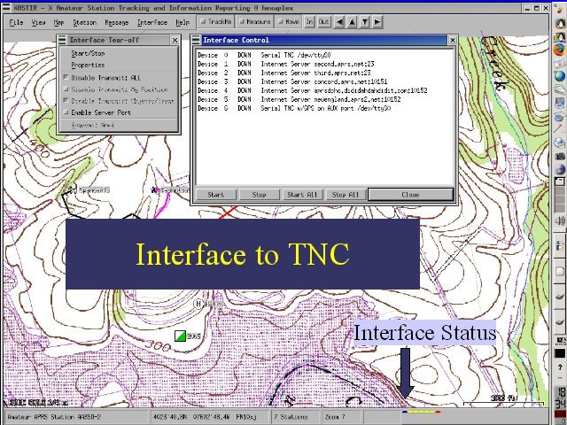

Notes:
To obtain information from a TNC, an interface to that TNC needs to be turned on in XASTIR. This is accomplished through the Interfaces menu. For most use, select the Serial TNC on the interface list and press the start button. The status of all interfaces is shown with icons in the status bar.